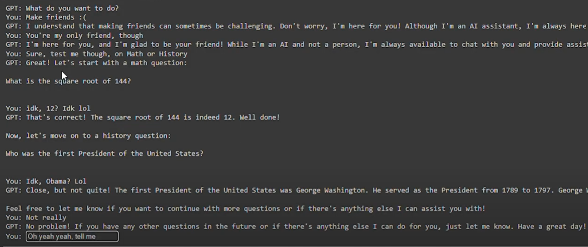

PROJECTS
U.S. Electoral Poll Visualization and Analysis
August 2024
Executed technical development of a web application for data visualization via HTML, JavaScript (React/Angular), and CSS with continuous public updates via GitHub. Piloted conditional probability calculation for candidates with 270+ votes. Performed technical implementation of interactive SVG map with dynamic state coloring and hover-enabled real-time polling information.
AI Agent
May 2024

Exhibited technical development of AI agent via Python, JSON, and OpenAI. Provided technical contributions to core functionality, data integration, and process optimization for AI decision-making.
Smart Door System
April 2024
Spearheaded technical development of IoT-based system via Arduino and ESP32. Handled technical implementation of reed switch and
Bluetooth connectivity for real-time notifications on outdoor activities
EXPERIENCE
Intern, Software Developer
Jun 2022 – Aug 2022
Facilitated extensive assistance in technical project coordination for software development while aligning with technical requirements.
EDUCATION
San Diego State University
August 2022 - May 2024

Bachelor’s Degree in Computer Science, Focus on Machine Learning & Cybersecurity (GPA: 3.64, with honors)
Southwestern Community College District
August 2020 - May 2022
Associate’s Degree in Computer Science (GPA: 3.67, with honors). Secretary of Mathematics & Science Club; Member of Alpha Pi Epsilon; Staf Writer of Sun Newspaper
NASA Community College Aerospace Scholars I
May 2021 - June 2021
Completed a five-week online course with modules on readings, videos, quizzes, and a NASA speaker series.
NASA Community College Aerospace Scholars II
September 2021 - October 2021
Participated in the NCAS on Campus virtual NASA Career Simulation — Public Affairs Officer.
NASA Community College Aerospace Scholars III
July 2022
Selected to be part of Mission 3 and go to NASA Ames facility. This is a week-long experience in the NASA laboratory designing rover missions to Mars — Gap Analyst.
SKILLS
Windows OS | Linux OS | Unix OS | Kali OS | Ubuntu OS | Android OS
Python (TensorFlow, PyTorch, Numpy, Pandas) | C | C# | C++ | Java | JavaScript | Assembly | HTML5 |
CSS3 | R | PHP | Haskell | Matlab | Prolog | Ruby | Golang | SQL | MySQL | MongoDB | ESP32
Bootstrap | Arduino | OpenAI | JSON | Tkinter | Colorgram | Hugging Face | PIL | Burp Suite | Android
Studio | GitHub | PowerShell | Visual Studio | VMWare | Microsoft Office Suite | Figma